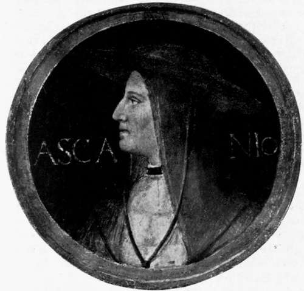

The Beautiful Stratagem. Part 3
Description
This section is from the book "The Life Of Cesare Borgia", by Rafael Sabatini. Also available from Amazon: The Life of Cesare Borgia.
The Beautiful Stratagem. Part 3
On the morrow January I, 1503 the duke issued dispatches to the Powers of Italy giving his account of the deed. It set forth that the Orsini and their confederates, notwithstanding the pardon accorded them for their first betrayal and revolt, upon learning of the departure of the French lances and concluding that the duke was thereby weakened, and left with only a few followers of no account had plotted a fresh and still greater treachery. Under pretence of assisting him in the taking of Sinigaglia, whither it was known that he was going, they had assembled there in their full strength, but displaying only one third of it, and concealing the remainder in the castles of the surrounding country. They had then agreed with the castellan of Sinigaglia, that on that night they should attack him on every side of the new town, which, being small, could contain, as they knew, but few of his people. This treachery coming to his knowledge, he had been able to forestall it, and, entering Sinigaglia with all his troops, he had seized the traitors and taken the forces of Oliverotto by surprise. He concluded by exhorting all to render thanks unto God that an end was set to the many calamities suffered in Italy in consequence of those malignant ones.1
For once Cesare Borgia is heard giving his own side of an affair. But are the particulars of his version true ? Who shall say positively ? His statement is not by any means contrary to the known facts, although it sets upon them an explanation rather different to that afforded us by Macchiavelli. But it is to be remembered that, after all, Macchiavelli had to fall back upon the inferences which he drew from what he beheld, and that there is no scrap of evidence directly to refute any one of Cesare's statements. There is even confirmation of the statement that the condottieri conceived that he was weakened by the departure of the French lances and left with only a few followers of no account. For Macchiavelli himself dwells upon the artifice with which Cesare broke up his forces and disposed of them in comparatively small numbers here and there to the end that his full strength should remain concealed; and he admires the strategy of that proceeding.
1 See this letter in the documents appended to Alvisi's Cesare Borgia, document 76.
Certainly the duke's narrative tends to increase his justification for acting as he did. But at best it can only increase it, for the actual justification was always there, and by the light of his epoch it is difficult to see how he should be blamed. These men had openly sworn to have his life, and from what has been seen of them there is little reason to suppose they would not have kept their word had they but been given the opportunity.
In connection with Cesare's version, it is well to go back for a moment to the execution of Ramiro de Lorqua, and to recall the alleged secret motives that led to it. Macchiavelli himself was not satisfied that all was disclosed, and that the governor's harshness and dishonesty had been the sole causes of the justice done upon him. " The reason of his death is not properly known," wrote the Florentine secretary. Another envoy of that day would have filled his dispatches with the rumours that were current, with the matters that were being whispered at street corners. But Macchiavelli's habit was to disregard rumours as a rule, knowing their danger a circumstance which renders his evidence the most valuable which we possess.
It is perhaps permissible to ask : What dark secrets had the torture of the cord drawn from Messer Ramiro ? Had these informed the duke of the true state of affairs at Sinigaglia, and had the knowledge brought him straight from Cesena to deal with the matter ?
There is justification for these questions, inasmuch as on January 4 the Pope related to Giustiniani for which see his dispatches that Ramiro de Lorqua, being sentenced to death, stated that he desired to inform the duke of certain matters, and informed him that he had concerted with the Orsini to give the latter the territory of Cesena ; but that, as this could not now be done, in consequence of Cesare's treaty with the condottieri, Vitelli had arranged to kill the duke, in which design he had the concurrence of Oliverotto. They had planned that a crossbow man should shoot the duke as he rode into Sinigaglia, in consequence of which the duke took great care of himself and never put off his armour until the affair was over. Vitellozzo, the Pope said, had confessed before he died that all that Ramiro had told the duke was true, and at the Consistory of January 6, when the Sacred College begged for the release of the old Cardinal Orsini who had been taken with the Archbishop of Florence, Giacomo di Santacroce, and Gianbattista da Virginio the Pope answered by informing the cardinals of this plot against the duke's life.
CARDINAL ASCANIO SFORZA. (From the fresco by Bernardino Iuini.)
These statements by Cesare and his father are perfectly consistent with each other and with the events. Yet, for want of independent confirmation, they are not to be insisted upon as affording the true version as, of course, the Pope may have urged what he did as a pretext to justify what was yet to follow.
It is readily conceivable that Ramiro, under torture, or in the hope perhaps of saving his life, may have betrayed the alleged plot to murder Cesare. And it is perfectly consistent with Cesare's character and with his age that he should have entered into a bargain to learn what Ramiro might have to disclose, and then have repudiated it and given him to the executioner. If Cesare, under such circumstances as these, had learnt what was contemplated, he would very naturally have kept silent on the score of it until he had dealt with the condottieri. To do otherwise might be to forewarn them. He was, as Macchiavelli says, a secret man, and the more dangerous for his closeness, since he never let it be known what he intended until he had executed his designs.
Guicciardini, of course, has called the Sinigaglia affair a villainy (" scelleragine") whilst Fabio Orsini and a nephew of Vitelli's who escaped from Sinigaglia and arrived two days . later at Perugia, sought to engage sympathy by means of an extraordinary tale, so alien to all the facts apart from their obvious reasons to lie and provoke resentment against Cesare as not to be worth citing.
Continue to: